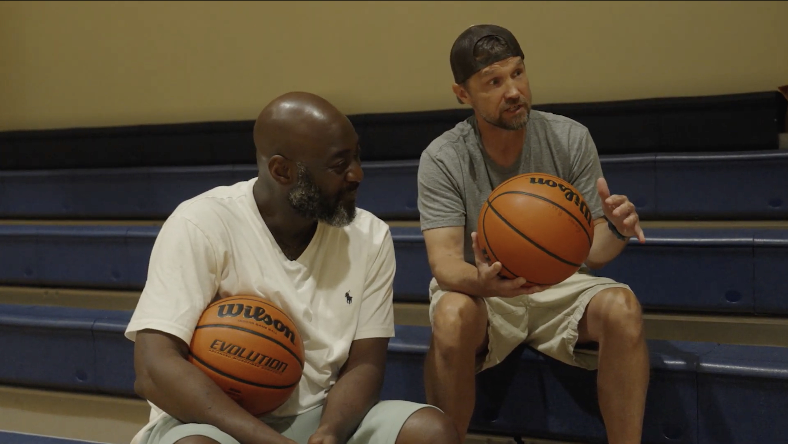
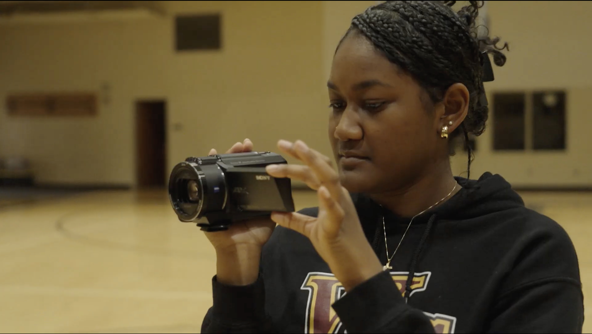
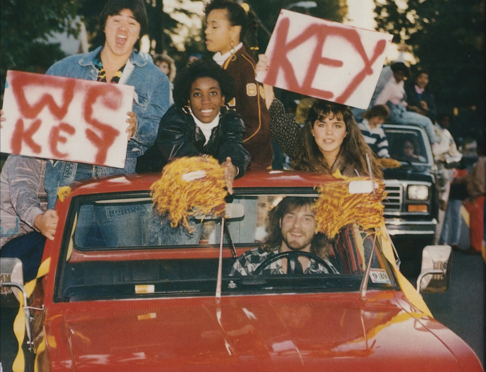
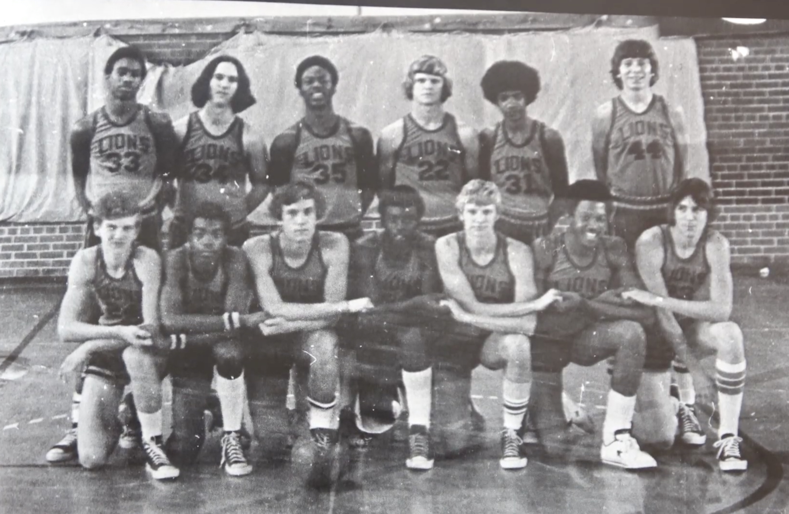

West Charlotte student and director Thai Bonapart explores a surprising chapter of her historically Black high school's history, when white students were bused in. The story challenges and twists the conventional narrative on busing, integration, and the South.
West Charlotte High School has long stood as a center of Black educational life in Charlotte, North Carolina. But there is a chapter of its history that bears re-telling — the years when, under court-ordered busing, white students were assigned to a school built for and by a Black community.
Director Thai Bonapart, herself a student at West Charlotte, turns her camera toward that history. She interviews alumni who lived it, examines what was gained and what was lost, and asks what it means for how we understand integration today.
What she discovers challenges assumptions — about busing, about integration, and about the communities that both bore its costs and shared in its benefits.

West Charlotte Lions — archival photograph


Thai Bonapart
Director
Growing up in Charlotte, the history of West Charlotte High School was never foreign to me — it was something I constantly heard about. My father, a proud West Charlotte graduate, often spoke about the school's legacy and the pride it carried in the community. My mother has also worked at West Charlotte for almost thirty years. My childhood was immersed in the school's culture, and surrounded by the alumni, teachers, and the community that has always defined it. However, it was not until my freshman year at West Charlotte that I fully understood the significance of the school's history.
That year, I took an African American studies class, in which my teacher curated a curriculum that introduced us to the full story of West Charlotte and the role it played during the era of busing in Charlotte. Learning about the school's history in an academic environment allowed me to understand its broader historical context, and connected many of the stories I grew up hearing. This connection of broader history and personal stories resonated with me and reshaped how I once perceived the school I had always known.
A year later, when I had the opportunity to begin working on a documentary alongside a group of West Charlotte alumni, I realized that it was my generational responsibility to tell this story.
West Charlotte represents more than just a school — it reflects a community, a pivotal era in history, and an ongoing conversation about integration, diversity, and the decisions cities make about their future. Because of my relationship to the school and the community, I felt called to help tell this story in a way that would resonate with both those who lived it and those discovering it for the first time.
The trust and openness of the people I interviewed made this film possible. Many members of the West Charlotte community were eager to share their experiences because they care deeply about preserving the legacy of the school. Their stories reveal just how profoundly integration shaped their lives. Many people recognize West Charlotte as a place where students from different racial and cultural backgrounds came together in ways that felt transformative. Many spoke about that time as something almost surreal — a rare moment when diversity was not only present, but truly lived.
The story of West Charlotte reminds us that progress is not permanent — it requires persistent commitment.
After watching this film, I hope audiences reflect on the impact of successful integration at West Charlotte and what it means that this system eventually unraveled. By revisiting this chapter of Charlotte's history, I hope the film ignites meaningful conversations about how communities can move forward without losing sight of what once brought them together.
For screening inquiries, press, educational licensing, or any questions about the film.
wchshistoryproject@gmail.com